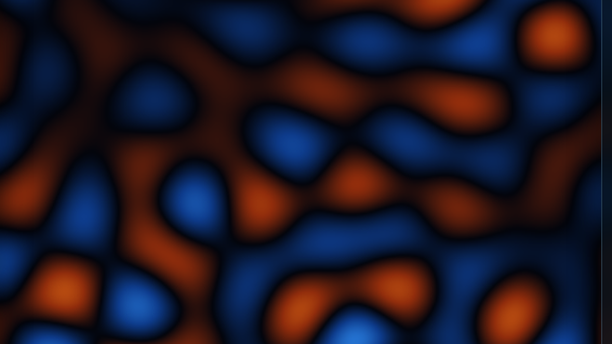
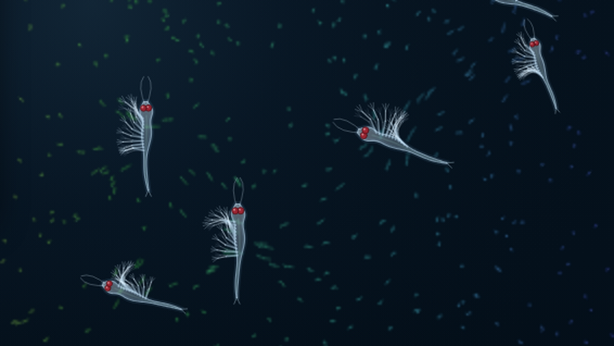
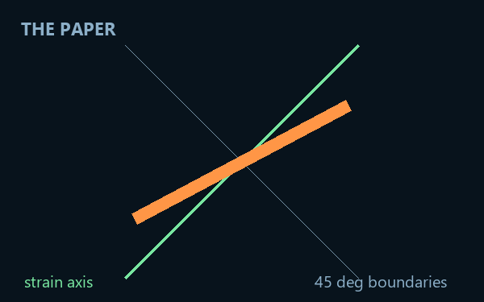
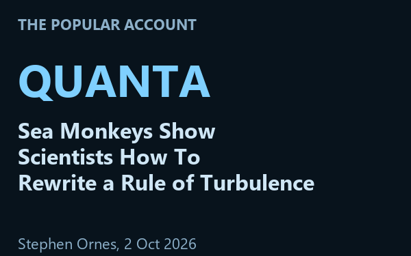
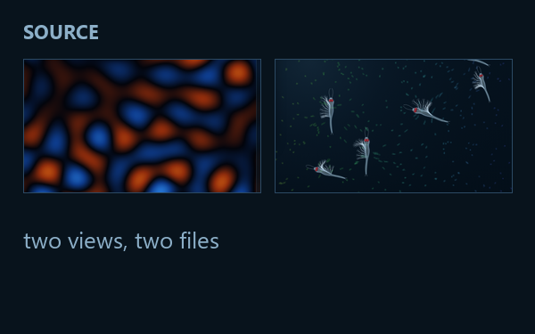

A 2D turbulence lab - two views of one paper
Two self-contained browser views of the same question: what a small swimmer does to a two-dimensional turbulent flow. No build step, no dependencies, no server - each is one HTML file.

The flow view Six 2D scenes - inverse cascade, a rod as a force dipole, jets, a barrier - with the spectral energy flux plotted live. 128² spectral solver, plain JS.
The organism view The brine shrimp itself: metachronal legs, schooling, dye. The animal whose stroke is the force dipole the flow view models.
The paper these were written against, and where it was read first:

The paper - Si and Fang, PNAS Nexus 3(2), pgae056, 2024 (preprint)
The account - Stephen Ornes, Quanta, 2 October 2026
Source - github.com/kevinelong/sim (FSL-1.1-MIT)What is whose: of the six scenes, three follow the article's setup (the rod's stresslet, the banded drive of their magnet-and-current channel, and a swarm that extends it), the dual cascade is textbook background, and the beta-plane jets and the transport barrier are our own additions. The paper itself is a laboratory experiment with real brine shrimp - this is a numerical analogue, not a replication of their tank. And the rod scene does not reproduce their 45-degree flux reversal; the measurements explaining why are in the flow view's own field guide. Source and licence: github.com/kevinelong/sim (FSL-1.1-MIT - source-available, not open source).